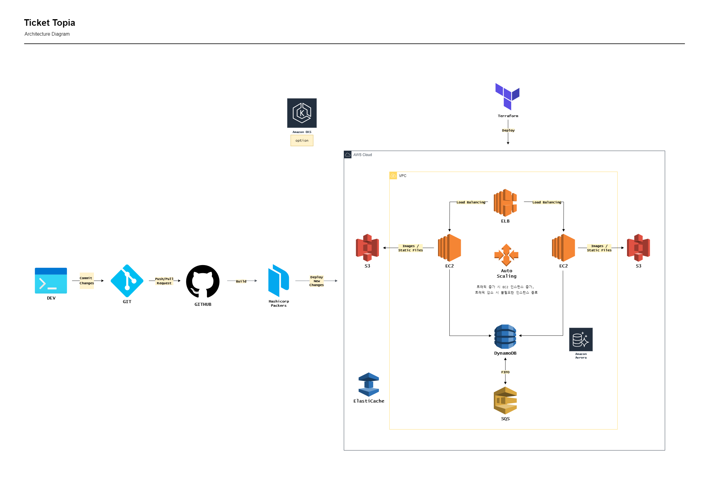

Ticket Topia
2024년 7월 ~ 8월
확장성 및 재사용성을 고려한 대규모 티켓 예매 서비스 인프라 구축
{kind=link}
사용 기술
프로젝트 목표
예상 동시 접속자 30만 명을 안정적으로 수용할 수 있는 티켓 예매 서비스 환경을 구축하는 것을 목표로 했습니다. 1인 1매 제한, 결제 순 좌석 배치, 매크로 방지 등 비즈니스 요구사항을 만족시키면서, 예매 당일 폭증하는 트래픽을 효과적으로 처리하는 데 중점을 두었습니다.
주요 역할 및 해결 과정
Terraform을 활용한 인프라 자동화 (IaC): 반복적인 인프라 구축 작업을 자동화하고 일관성을 유지하기 위해 Terraform을 도입했습니다. 모든 인프라(VPC, Subnet, EC2 등)를 코드로 관리함으로써, 휴먼 에러를 최소화하고 향후 유사한 이벤트 발생 시 신속하게 기존 환경을 재사용하고 배포할 수 있는 기반을 마련했습니다.
CI/CD 파이프라인 구축: 개발 효율성을 높이기 위해 GitHub Actions를 활용한 CI/CD 파이프라인을 구축했습니다. 팀원이 Django 설정 파일을 수정하여 GitHub에 Push하면, 자동으로 Docker 이미지를 빌드하고 Amazon ECS에 무중단 롤링 업데이트 방식으로 배포되도록 워크플로우를 설계했습니다. 이를 통해 수동 배포 과정을 제거하고, 코드 변경 사항을 신속하고 안정적으로 운영 환경에 반영할 수 있었습니다.
오토 스케일링 및 부하 분산 설계: 티켓 예매 시작과 동시에 발생하는 트래픽 급증에 유연하게 대응하기 위해 ASG와 ALB를 아키텍처의 핵심으로 구성했습니다. ALB가 사용자 요청을 여러 EC2 인스턴스에 고르게 분산시켜 특정 서버의 과부하를 방지하고, ASG는 실시간 트래픽 수요에 맞춰 인스턴스 수를 자동으로 확장 및 축소하여 최적의 자원 효율성과 성능을 유지하도록 설계했습니다.
성과
구축된 인프라는 특정 인스턴스에 장애가 발생하더라도 이를 자동으로 감지하고 정상 인스턴스로만 트래픽을 전달하여 서비스 중단을 방지합니다. 그 결과, 사용자는 트래픽이 몰리는 상황에서도 지연 없이 티켓을 예매할 수 있는 안정적인 환경을 제공받게 되었고, 운영 비용 또한 효율적으로 관리할 수 있었습니다.